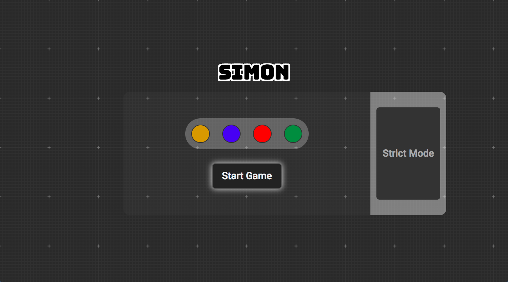

I help teams plan and implement product launch strategies under strict deadlines. Long-term growth happens through consistent iteration and playful experimentation. Great processes lead to great work.
I started building sites and applications as a hobby, and use my skills and experience to serve the Tech community. Shaping the people around me is just as important as building my body of work.
In my free time, I brew Commander Decks for Magic the Gathering and train in the woods fighting bears. My record is improving...
...Barely.
Projects
